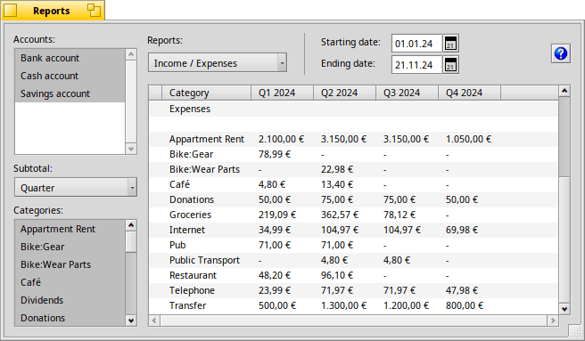

Reports
This can be a powerful tool for you to find out just how and where you spend your money.

Three different are available:
- - A breakdown of your income and expenses by category.
- - How much money you have when your debts are weighed against your savings.
- - Show all transactions in a particular category.
For any report, you can show a for each , of a year, , or (picking ) just the total for the period of time that you have set with the and for the report.
Reports can be run on just certain or .
If you hold ALT while clicking on items of a list, you can select multiple items. You select a range of items by holding SHIFT and clicking on the list.
If you want to select all, click on any item in the list and then press ALT A.
Previous: Budget Next: Reconcile